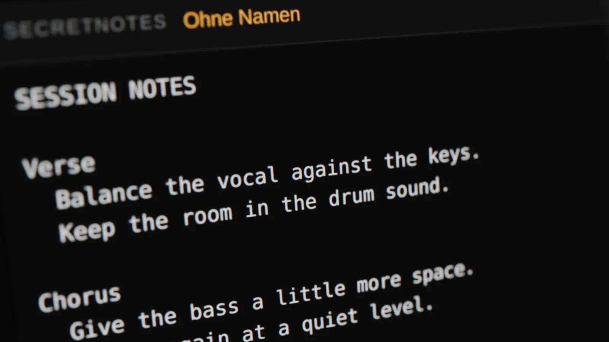
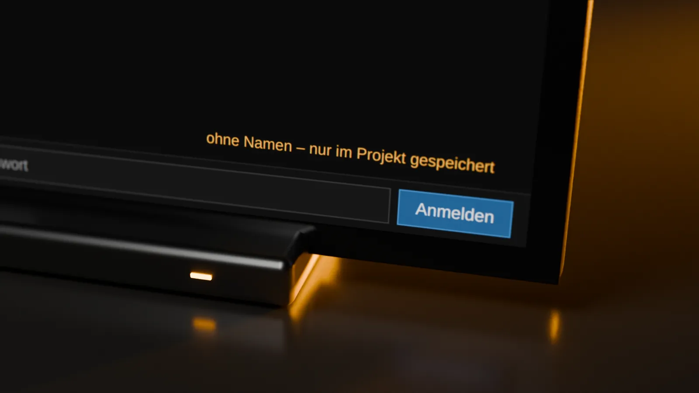
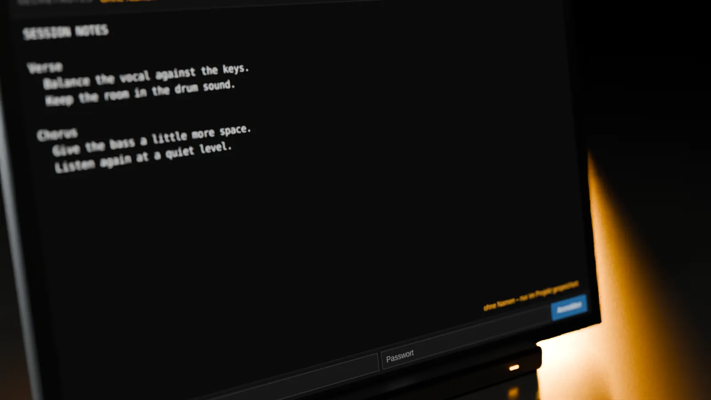

Closer.



What it does
Beside your music
Write down what the mix needs while you hear it, without leaving the DAW.
Synced notes
A notes.secret.vip account keeps the notes in sync.
For collabs
Share a note by email on notes.secret.vip. Your collaborators read or edit it in the DAW.
Free download
Download directly. No purchase or license key needed.
Details
- FormatsMac: VST3, AU, CLAP. Windows: VST3, CLAP.
- PriceFree
- Accountnotes.secret.vip, needed to sync notes